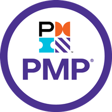
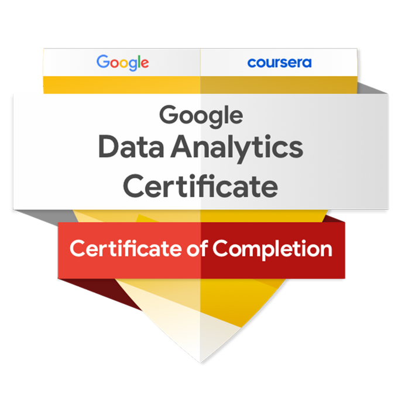
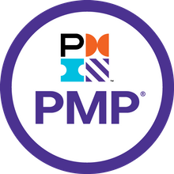
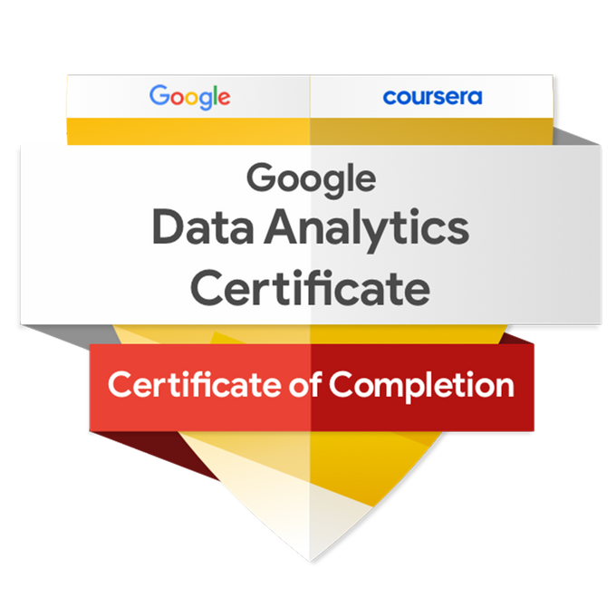

CV


CV
I'm Sourabh.
an IT Project Manager.

I am solution-focused, PMP certified IT project manager with ability and experience in leading large-scale technology projects from design through to implementation. Instrumental in dissecting complex problems, devising iterative processes, and leading end-to-end change management.
Innovative, results-driven IT Project Manager with over 15 years of diverse IT experience emphasized on leveraging technology to achieve business goals. Highly experienced with digital transformation, talent development, product & process innovation and managing all phases of the project life cycle.

Google Certified Data Analyst.Turning data into information, information into insight and insight into business decisions.Conducting full lifecycle analysis to include requirements, activities and design, develop analysis and reporting capabilities.